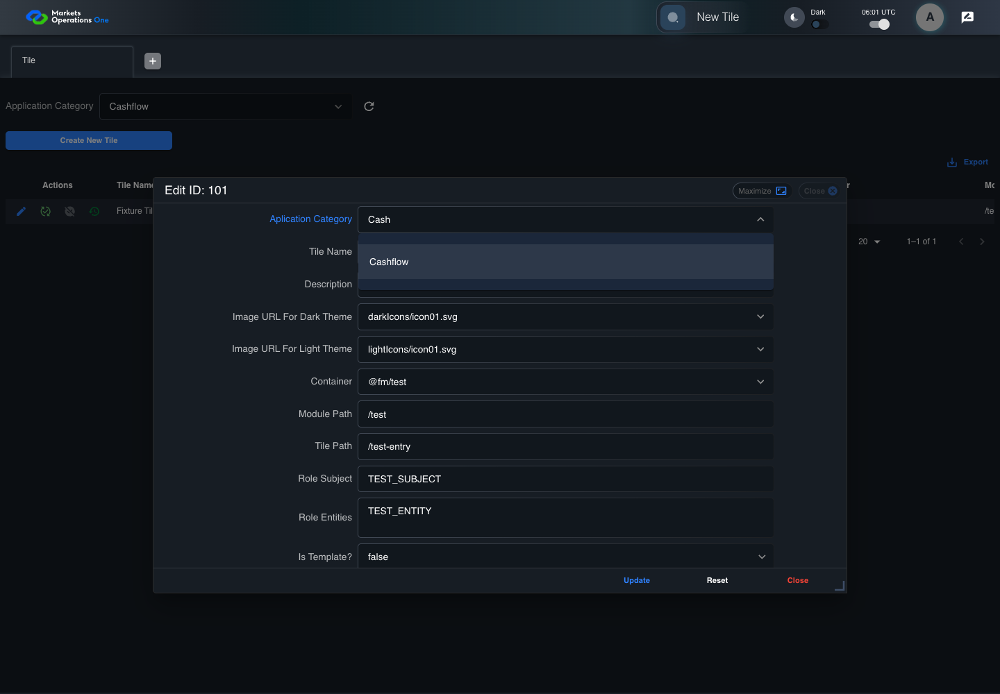

UX-016 administration boundary with step screenshots
PASS · application/run-050/ux-016-administration-boundary-with-step-screenshots-c4034bd046ff-attempt-1 · ACTUAL_APPLICATION_LOCAL_SERVICES
Actual React administration screens. Controlled browser credentials, role, records, and BFF responses. Save probes persist the received UI payload without replacing it with expected values. Declared clock emulation controls field timers. Proposed accessibility and source-risk expectations remain separate from business approval.
2026-10-22T06:01:35.185Z to 2026-10-22T06:01:40.922Z
Assertions and result · Artifact manifest · Exact run inputs and source hashes
Result SHA-256:23da715727b0c3e1881f04891ed9b0ab175e4aead6fb754179595bf3a476bd1bScreenshot capture: CAPTURED. Named frames: 7.
Step screenshot bindings: COMPLETE. 6/6 canonical steps have execution screenshots.
Bindings measure structural coverage only. They do not establish screenshot content quality or relevance.
Screenshot content review: NOT_REVIEWED. Recorded context: 0/7 frames. Identical image bytes: 2 repeated frames. Recorded context does not establish human visual review.
Canonical step timeline
Given ADMIN-A has tile record 101 loaded; the fixture provides category Cashflow
Execution: PASSED.1. step-01 Visible state after step 1: Given ADMIN-A has tile record 101 loaded; the fixture provides category Cashflow
2026-10-22T06:01:39.624Z · 1440×1000
Step: /Users/lushevol/code/github/ratan-release-impact/workbench/tasks/ui-test-coverage-20261022/test-cases.md:12776
SHA-256:f42e60b2afd72bb191b75c7cfcfcfe40be30cddc84992ed6e19e3b9f824d400bWhen ADMIN-A types "Cash" into the combobox labelled "Aplication Category" in the dialog with title text "edit ID: 101" on the administration page
Execution: PASSED.
2. step-02 Visible state after step 2: When ADMIN-A types "Cash" into the combobox labelled "Aplication Category" in the dialog with title text "edit ID: 101" on the administration page
2026-10-22T06:01:39.795Z · 1440×1000
Step: /Users/lushevol/code/github/ratan-release-impact/workbench/tasks/ui-test-coverage-20261022/test-cases.md:12777
SHA-256:c095ef0d0960510258cb5b4ccf2f7221a1650dfbdfe63b74a0c7130c29caacf6And ADMIN-A presses "ArrowDown" on the combobox labelled "Aplication Category" in the dialog with title text "edit ID: 101" on the administration page
Execution: PASSED.
3. step-03 Visible state after step 3: And ADMIN-A presses "ArrowDown" on the combobox labelled "Aplication Category" in the dialog with title text "edit ID: 101" on the administration page
2026-10-22T06:01:39.888Z · 1440×1000
Step: /Users/lushevol/code/github/ratan-release-impact/workbench/tasks/ui-test-coverage-20261022/test-cases.md:12778
SHA-256:67c0b4f4b0cf936c0622e0606411e6d20371563b16feaa0e2f5b01f85d5ccf18Then The option labelled "Cashflow" in the popup list for "Aplication Category" on the administration page is highlighted
Execution: PASSED.4. step-04 Visible state after step 4: Then The option labelled "Cashflow" in the popup list for "Aplication Category" on the administration page is highlighted
2026-10-22T06:01:39.980Z · 1440×1000
Step: /Users/lushevol/code/github/ratan-release-impact/workbench/tasks/ui-test-coverage-20261022/test-cases.md:12779
SHA-256:67c0b4f4b0cf936c0622e0606411e6d20371563b16feaa0e2f5b01f85d5ccf18Image bytes match frame 3. An unchanged image can be valid for consecutive assertions. This match does not establish correct step content.
When ADMIN-A presses "Enter" on the combobox labelled "Aplication Category" in the dialog with title text "edit ID: 101" on the administration page
Execution: PASSED.5. step-05 Visible state after step 5: When ADMIN-A presses "Enter" on the combobox labelled "Aplication Category" in the dialog with title text "edit ID: 101" on the administration page
2026-10-22T06:01:40.065Z · 1440×1000
Step: /Users/lushevol/code/github/ratan-release-impact/workbench/tasks/ui-test-coverage-20261022/test-cases.md:12780
SHA-256:de3810c8bd2b5810c3aefe299c8b1993d455db90fc5b3050b9c5faf08ba52b6dThen The combobox labelled "Aplication Category" in the dialog with title text "edit ID: 101" on the administration page has value equal to "Cashflow"
Execution: PASSED.6. step-06 Visible state after step 6: Then The combobox labelled "Aplication Category" in the dialog with title text "edit ID: 101" on the administration page has value equal to "Cashflow"
2026-10-22T06:01:40.146Z · 1440×1000
Step: /Users/lushevol/code/github/ratan-release-impact/workbench/tasks/ui-test-coverage-20261022/test-cases.md:12781
SHA-256:a521cae0753c4c6e55c404dd46d52f9cbed1c0569c66007399e0e6bf64665a13
Additional named frames

The final visible state after the named test assertions.
2026-10-22T06:01:40.333Z · 1440×1000Step: Test source: /Users/lushevol/code/github/ratan-release-impact/workbench/e2e/audit-specs/admin-ux.spec.ts:12
SHA-256:
a521cae0753c4c6e55c404dd46d52f9cbed1c0569c66007399e0e6bf64665a13Image bytes match frame 6. An unchanged image can be valid for consecutive assertions. This match does not establish correct step content.
Screenshots establish visible state only. Assertions and traces support functional claims.